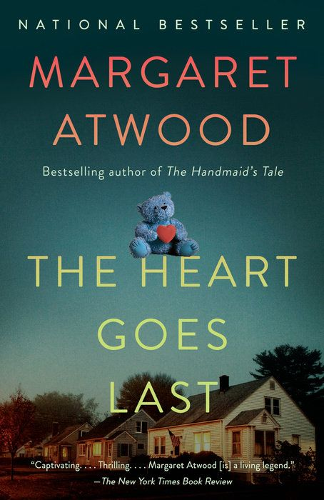
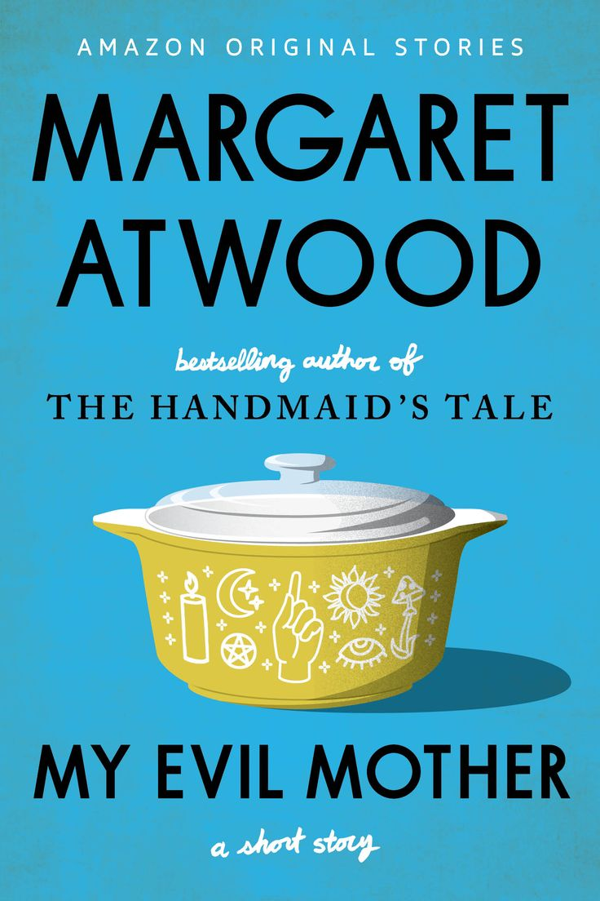
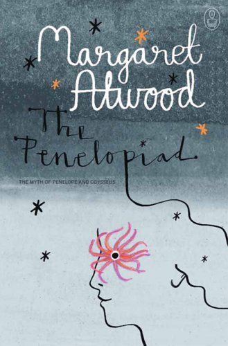

NOTICE BOARD


With both bestselling literary and award-winning novels to her name, it doesn't matter if you are a seasoned fan or new Margaret Atwood, there is plenty for you to choose from...



© Copyright Marvel. All rights reserved.